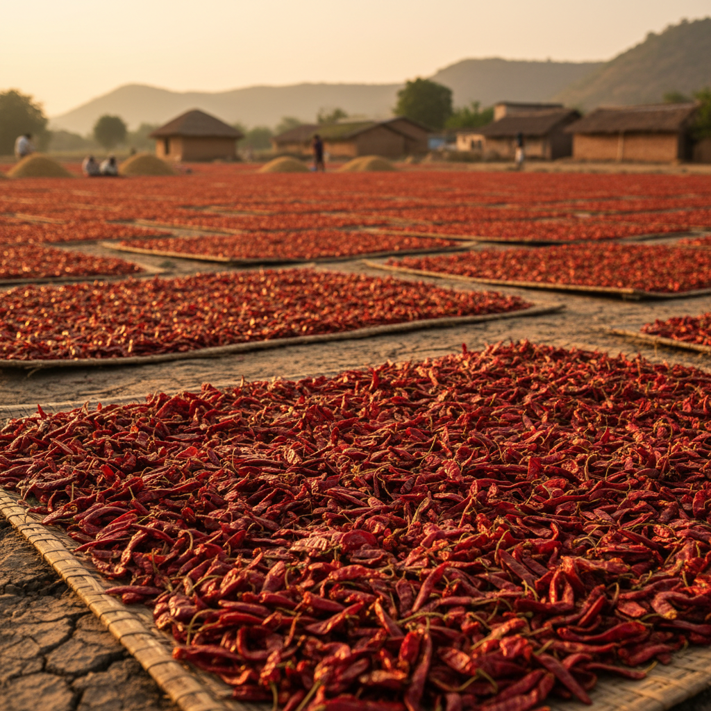

Some flavors cannot be manufactured.
They can only be inherited.
From the red soils of Andhra Pradesh to the drying yards of Karnataka — WGAN FARMS brings you South India’s finest dry red chillies, sun-dried with patience and packed with precision.
We do not merely sell chillies. We carry forward a living tradition — one harvest at a time. What reaches your kitchen or container shipment is exactly what left the farmer’s hands. Nothing added. Nothing compromised.

Where the story begins
Long before the language of branding existed, South Indian farmers already knew the language of fire. WGAN FARMS is built on direct relationships with farming communities across Andhra Pradesh, Telangana, Tamil Nadu, and Karnataka.
Field-verified varieties
Each chilli is selected for its authentic geography, soil character, and culinary identity.
Sun-dried, not rushed
Traditional drying, moisture control, cleaning, grading, hygienic packing.
Bulk & global readiness
Consistent grades, documentation support, private label options.


Start with the varieties
See origin, heat profile, traditional drying, and authenticity story for every chilli we supply.